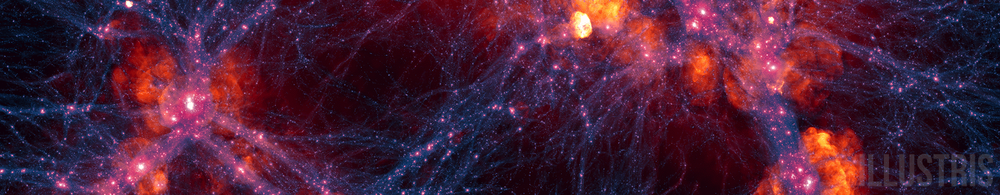

Research
My research spans a wide variety of fields: from theoretical extragalactic astronomy to gravitational wave physics. In graduate school, I've focused my work on the dynamics of galaxies, and what they can tell us about the evolution of galaxies from the Local Group (the group of our nearest neighboring galaxies) to low mass galaxies throughout cosmic time. As an undergraduate, I lead studies on the impact of future gravitational wave detectors on our ability to test General Relativity. You can read more about each of my different research interest areas below!
Galaxy pairs
Big picture:
LambdaCDM, the presently accepted cosmological model, predicts that small galaxies will merge to form more massive galaxies as the universe ages.
As galaxies merge, they interact with each other, affecting one another's gas content, stellar mass, dark matter mass, and so on. They also affect each other dynamically, influencing their orbits and trajectories.
Details:
The dynamics of low mass galaxies have been assumed to follow those of higher mass galaxies, but there have been no prior studies on the differences between low and high mass galaxy that arise from cosmology.
In my study, I identified low mass and high mass galaxy pairs from z=0-4 in the IllustrisTNG simulation, and found that the dynamics of low mass and high mass galaxies do not evolve identically.
More details on this work are forthcoming (stay tuned for links to the paper, which was accepted for publication in December 2023)!
The mass of our local group of galaxies
Big picture:
The mass of the Local Group sets the number of its constituent galaxies and their mass distribution, the orbits of all of these galaxies, and tells us what other galaxy groups we should be comparing the Local Group to. However, the mass content of the Local Group consists primarily of dark matter, which has not been directly detected, and which is not uniformly distributed, as the dark matter halo of an isolated galaxy may be.
As a result, mass determinations of the Local Group are not straightforward, and have historically varied by many orders of magnitude.
In order to construct better dynamical models of the Local Group and to fairly compare it to other galaxy groups, it's important to constrain the total mass as much as possible.
Details:
Newtonian orbits for a two-body system are analytically well described, and are a function of only four parameters: total mass, separation, relative velocity, and time. This type of orbital solution does not work for unbound systems, or complex systems that include other gravitational sources.
The two most massive galaxies of the Local Group, M31 and the Milky Way (MW), constitute the bulk of the mass of the Local Group, and while they are not an isolated pair of galaxies (being surround my nearby massive satellites such as M33 and the LMC+SMC), their orbits can still inform estimations of the Local Group mass. In fact, by making a series of assumptions about the past history of the MW and M31, such as arguing that they were approximately co-located near the beginning of the Universe, and that they have not previously had a pericentric passage, permit the use Newtonian two-body dynamics to model the orbits of the MW and M31 system. This technique has been used many times since the 1970’s to estimate the mass of the Local Group, and is called the Timing Argument.
With better measurements of the age of the Universe, or the separation or relative velocities of the MW and M31, measurements of the Local Group mass improve. However, recent studies have found evidence that the MW has been perturbed by the recent passage of its massive satellite, the LMC, such that the luminous disk of the MW is moving with respect to the center of mass of the MW halo.
I studied methods to account for the MW disk “travel velocity” in Local Goup mass measurements, and found that the total mass of the Local Group decreases as a function of the magnitude of the travel velocity. For the presently measured value of the travel velocity of ~42km/s, the inferred Local Group mass is reduced by 10-12% compared to a system in true equilibrium. These results showed for the first time the dependence of inferred mass measurements on the interaction between the MW and LMC.
Find the paper on ApJ or for free on arXiV.
The Future for Tests of General Relativity
Big picture:
Einstein's General Theory of Relativity has been accepted as the . However, scientists have only recently been able to test Einstein's theory in very extreme environments. Gravitational waves, which are emitted during the inspiral and merger of two black holes or neutron stars, let scientists know exactly how spacetime is behaving in these extreme gravity regimes, where massive objects are moving at a fraction of the speed of light.
Details:
I explored the ability of different configurations of gravitational wave detectors to concisely constrain various theories of gravity that serve as alternatives to General Relativity.
We found that advanced detectors, including Einstein Telescope and Cosmic Explorer, will be able to constrain the magnitude of deviations from General Relativity up to 10x more confidently than present detectors (LIGO). We also show that some alternative theories of gravity can be tested even more rigorously when space-based gravitational wave detectors are used in conjunction with ground-based detectors. Three papers were published regarding these results, which can be found at the following links:
- Paper I: "Theory-Agnostic Constraints on Black-Hole Dipole Radiation with Multi-Band Gravitational-Wave Astrophysics" [Phys. Rev. Letters, arXiV]
- Paper II: "Theoretical Physics Implications of Gravitational Wave Observation with Future Detectors" [Phys. Rev. D, arXiV]
- Paper III: "Frequency-domain waveform approximants capturing Doppler shifts" [Phys. Rev. D, arXiV]